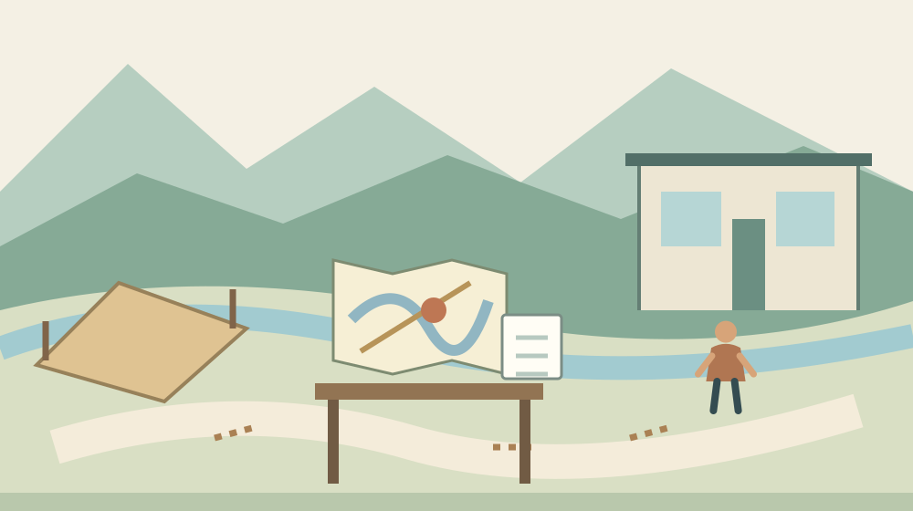

森町の企業立地サイト停止｜土地相談の確認先
Q. 森町の企業立地サイトが見られない。土地活用の相談も止まっている？
森町は2026年10月23日更新の案内で、企業立地・雇用促進特設サイトの一時停止を知らせています。復旧時期は未定と記載されていますが、土地相談や支援制度の終了を告知する内容ではありません。所在地と希望用途を整理し、産業振興係0538-85-6319へ確認してください。個別の土地の利用条件は別途照合が必要です。
森町の持ち主が困るのは、次の確認先が見えないこと
森町で事業用地を探す人や、土地の活用を考える持ち主にとって、情報サイトの停止は段取りに影響します。仕事の合間に資料を探し、家族と話し、現地へ足を運ぶ。その準備を続けている方の手間を、単なる画面の不具合として扱いたくありません。
私は大石浩之（磐田市／不動産業）です。森町の外に住む不動産事業者として、町の可能性と、土地ごとの条件を分けて見ています。この記事はサイトの技術解説ではなく、情報が見られない間も確認の順番を失わないための案内です。
安全を確保するために公開を止める判断と、相談したい持ち主の時間を守ること。その両方に目を向けたいと思います。町に復旧を急がせるだけでは、家族の疑問は解けません。まず、止まった範囲と、今も確認先が分かる事項を分けます。
10月23日の公式案内が伝えていること
森町の「企業立地・雇用促進特設サイトの一時停止について」は、2026年10月23日更新です。町は、特設サイトの公開を一時的に停止していると説明しています。本記事では、この公式本文を2026年10月26日に確認しました。
町は停止の理由を、PHPの重大な脆弱性の発見に伴う更新作業と説明しています。PHPはサイトの裏側の処理に使われる言語で、情報資産の保護と安全確保の観点から対応するとしています。町の説明を超えて、原因や作業の進捗を推測することはしません。
公式本文には、当該サイトで不正アクセスや情報漏えい等の被害はないと記載されています。ただし、時点は2026年10月23日現在です。これは町が明示した範囲の説明であり、私が独自にシステムを調査して証明したものではありません。
復旧時期は未定で、復旧次第ホームページ等で知らせるとしています。初回の公表日や停止開始の正確な時刻は、今回確認した本文にはありません。更新日をそのまま停止開始日と呼ばず、分かる日付だけを記録します。
問い合わせ欄は産業振興係で、電話は0538-85-6319です。所在地は森町森2101-2と記載されています。訪問の要否や相談の担当は、質問内容によって確認が必要です。電話番号が掲載されていることと、個別相談の予約が取れることは別の話です。
意外な点｜サイトの停止と土地の利用条件は別の問題
企業立地・雇用促進特設サイトの停止告知には、土地相談の受付終了や支援制度の廃止は書かれていません。一つの情報窓口が止まったことだけで、町全体の事業相談も止まったと判断することはできません。私は、この区別を最初に置きます。
同じ理由で、サイトが復旧すれば土地の利用が認められるわけでもありません。情報にアクセスできることと、建物の用途や土地利用の条件が合うことは別です。所有者の意向、事業の内容、場所の条件を、それぞれ確認する仕事は残ります。
私なら、電話で「この土地は使えますか」とだけ聞く前に、何をしたい土地なのかを書きます。事業所を置きたいのか、倉庫として使いたいのか、貸すことを考えているのか。ここでは具体的な用途の例を挙げているだけで、いずれかが許可されるとは述べていません。
土地を持っている側と、事業に使いたい側では、最初に知りたいことも違います。私は、持ち主なら場所と現在の利用状況、事業者なら必要な用途と時期を先に整理する方法を勧めます。互いの希望を一枚に混ぜず、誰が答えを必要としているかを明らかにします。
都市計画図は見られるが、図だけで結論を出さない
森町の「都市計画図（用途図）について」は、縮尺1万分の1の中遠広域都市計画図をPDFで公開しています。土地利用や建築計画の法規制を確認する参考資料として案内しています。特設サイトの停止とは別に、このページの本文を確認できました。
町は、図が都市計画の概略を示すものであり、詳細は役場建設課で確認するよう明記しています。図を開けることは、個別の敷地について回答を得たことではありません。縮尺のある図で場所を確かめ、詳細の照合へ進むための資料です。
同ページの問い合わせ先は建設課都市計画係で、電話0538-85-6322です。企業立地の案内に載る産業振興係とは確認する内容が異なります。私は、事業の相談と図面の確認を混同しないよう、質問の横に確認先を書き添える方法を提案します。
家族が地図を見比べるとき、住所の表示だけでは対象の範囲が伝わりにくい場合があります。私は、手元にある資料で所在地や地番を確かめ、どの範囲を相談したいか分かるようにする考えです。新しく有料の証明書を取る前に、必要資料を担当へ尋ねれば無駄を抑えられます。
都市計画図の色だけから、建てられる建物や使える用途を断定する記事にはしません。道路や敷地の状態など、図の概要とは別に照合する事項も考えられます。何を確認すべきかを窓口や専門家に尋ねることと、自己判断で工事を進めることは区別します。
良い点｜安全のために止め、確認先を残している
森町の停止告知は、理由、被害の有無を示す時点、復旧時期が未定であることを記載しています。私は、説明のないまま見られなくなるより、何のために止めているかが分かる点を評価します。日付があるため、後の発表と照合する基準にもなります。
問い合わせ先が掲載されていることにも意味があります。土地活用の検討は、持ち主だけで進むとは限りません。家族や事業者、専門家がそれぞれ時間を合わせる場面で、確認先を失わずに済むことは実務上の助けになります。担当者が答えられる範囲を尋ねる入口として使えます。
町は都市計画図について、参考資料としての役割と、詳細確認の窓口を分けて説明しています。私は、この線引きも良いと考えます。公開資料があるほど、図を見ただけで結論を出したくなります。資料の限界を明記することは、利用者の判断を助ける案内です。
私は、町の情報提供を使う側も、問い合わせの準備で支えられると考えます。同じ土地の説明を毎回最初からやり直すのではなく、所在地と質問をそろえる。持ち主の移動を減らすと同時に、限られた窓口の担い手が確認に使う時間も確保しやすくなります。
注文したい点｜復旧時期以外にも知りたい情報がある
サイト停止中の持ち主が知りたいのは、復旧日だけとは限りません。私の要望は、停止中にどの情報をどこで確認できるかも、同じ案内から分かるようにすることです。これは現在の受付状況についての断定ではなく、一利用者側の希望です。
たとえば、以前掲載された資料を必要とする場合、代わりに確認できる窓口が分かれば、待つか問い合わせるかを選べます。私は、制度や物件の存在を勝手に推測するより、公開されていない部分を尋ねる余地がある案内を望みます。資料が出せるかどうかは、担当の判断を確認する事項です。
問い合わせ先の担当者も、調査や他部署との確認が必要なことがあります。私は、その場で全部答えるよう求めるつもりはありません。返答の方法や、次に連絡する時期を確認できれば、家族は同じ問い合わせを繰り返さずに済みます。受付と回答を分けて考える余地が必要です。
復旧を待つのか、電話で聞くのか、私も迷う場合があります。質問が掲載資料の閲覧だけなら、急がず待てるかもしれません。一方、家族が集まる日や事業の検討日が決まっているなら、その事情を伝えたい。急ぐ理由を具体的な日付にするのが、押しつけない相談だと考えます。
家族の段取り｜土地を決める前に質問を分ける
事業用地の検討では、土地の場所、希望する使い方、検討の時期を分けて整理できます。私は、サイトの復旧を待つ時間に、この三つをメモする方法を勧めます。書いた内容が行政の指定様式になるわけではなく、家族内で話をそろえるための準備です。
所在地は、手元の資料で確認できる範囲を書きます。分からない地番や面積を埋めるために、想像で数字を入れないでください。現地の呼び名と資料の表記が違う場合は、両方を残す方が確認しやすくなります。資料が見つからないことも、そのまま相談内容にできます。
希望する使い方には、現在決まっていることと未定のことを分けます。「貸すか売るか未定」「事業用途を検討中」と書いても構いません。私の考えでは、結論がないことを隠すより、検討の段階を伝える方が、今必要な資料と後で必要な資料を分けやすくなります。
時期は、工事の開始を勝手に決めるのではなく、家族が判断したい日や、相談できる日を書く欄にします。遠方に住む家族の帰省を予定しているなら、訪問前に確認できる事項を尋ねる。移動を伴う相談ほど、事前の電話に意味があります。
相場の話をしたくなった場合も、土地の条件を後回しにしない方がよいと私は考えます。森町の地価調査と地価公示を比較した記事は、公的な価格情報の読み分けを扱っています。公表価格を、そのまま個別物件の売値や賃料にはできません。
対案・結論｜一度の電話で、次に確かめる先を決める
森町の企業立地サイトが見られない場合、今日できる準備は、土地の所在地と希望用途を一枚にして問い合わせ先を確かめることです。私は、最初の電話の目的を「結論をもらう」ではなく、「次の確認を決める」に置く方法を提案します。
電話では、特設サイトの停止告知を見たことと、知りたい内容を伝えます。相談の担当が合っているか、資料が必要か、来庁するなら予約が必要かを尋ねます。個別の受付方法は今回の停止告知だけでは分からないため、記事で決めつけず本人が確認する形です。
担当が別であれば、部署名と連絡先を記録します。回答を待つ場合は、どの方法で連絡を受けるかを確認します。家族に共有するメモは、質問、回答、未確認の三つに分けると、誰かの感想が公式回答に置き換わることを防ぎやすくなります。

私なら、電話を終えた日に土地の結論まで出そうとはしません。必要な資料が分かった、詳しい確認先が分かった、まだ答えが出ない理由が分かった。そのどれかが得られれば、次の作業を決められます。情報がない状態と、確認中の状態には違いがあります。
森掛川IC周辺の開発を考える場合は、町の開発可能性調査を読んだ記事も文脈になります。ただし、地区についての調査結果は、すべての土地への個別回答ではありません。今回の記事は、その判断の前に確認先を確保する役割です。
大石の視点｜便利な立地と、回せる事業を分ける
森町の土地の可能性は、道路の位置や広さだけでは測れません。私は、所有者が維持費を負担できるか、事業者が人と移動を確保できるかまで考えたいと思います。町の魅力を伝える情報と、目の前の土地を動かす判断の間には、具体的な確認が必要です。
私が相談準備を組み立てるなら、地図と家族のメモを机に並べます。地図には対象の場所、メモには用途と時期を書く。これは私の提案する場面であり、特定のお客様との実話ではありません。査定額を先に決めず、何を確認できていないかを見る姿勢です。
スマートICの近さと暮らしやすさを分けた記事でも、便利さを一つの条件だけで判断しない考え方を示しました。事業でも、アクセスの良さだけで継続性までは決まりません。担い手や維持の負担を、土地の魅力と一緒に確かめたいところです。
サイトの停止は困ります。しかし、復旧を待つ間に土地の条件まで推測で埋める必要はありません。私は、分からない部分を明記して相談先へつなぐ方が、長く使える判断になると考えます。今日、所在地と質問を一つ書く。それが、森町の可能性を実務へ近づける一歩です。
FAQ｜企業立地サイトが停止している間の疑問
土地活用の相談も受け付けていないのですか？
2026年10月23日更新の告知は、特設サイトの公開停止を説明するものです。土地相談の受付停止や支援制度の終了までは書かれていません。産業振興係0538-85-6319に、所在地と相談内容を伝えて確認してください。個別の相談受付、予約、必要資料が案内されるかは、問い合わせて確かめる事項です。
都市計画図を見れば、建てられるか分かりますか？
森町は都市計画図を、土地利用や建築計画の法規制を確認する参考資料として公開しています。ただし、図は概略で、詳細は役場建設課へ確認するよう明記しています。図の色や表示だけで、個別の建築や用途が認められるとは判断できません。対象の土地を特定し、必要な照合事項を窓口や専門家に確認してください。
サイトの復旧日は決まっていますか？
確認した10月23日更新の本文では、復旧時期は未定で、復旧次第ホームページ等で知らせるとされています。この記事では復旧完了を確認していません。急ぐ理由がある場合は、必要な情報と検討日を整理して担当へ問い合わせてください。公表日の記述と、その後の実際の状況は分けて確認する必要があります。
出典・確認日
2026年10月確認。開催・制度の数値は公式情報、評価と段取りの提案は執筆者の意見です。
- 森町：企業立地・雇用促進特設サイトの一時停止（2026年10月26日確認）
- 森町：都市計画図（2026年10月26日確認）
- 森町：森掛川IC周辺地区開発可能性調査（2026年10月26日確認）
開催日時、取扱条件、制度・数値は変わる場合があります。実際の利用前に主催者・担当窓口の最新案内を確認してください。個別の判断が必要な場合は、担当窓口や関係する専門家へご相談ください。